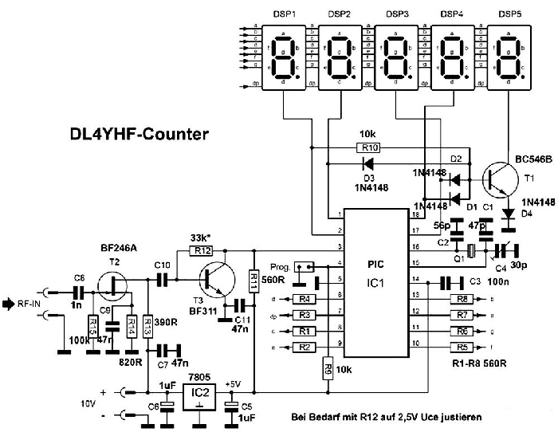

Частотомер - цифровая шкала.
При работе на любительской радиостанции перед радиолюбителем часто встает необходимость точно знать частоту, на которую настроен его трансивер или приёмник для того, чтобы не уйти за пределы диапазона или для точной настройки на заранее оговоренную частоту. Механические шкалы не дают такой возможности, поэтому приходится конструировать электронные шкалы. В настоящее время разработано большое количество электронных шкал и частотомеров, при разработке которых используются микросхемы разной степени интеграции. Зачастую это сложные устройства, насчитывающие несколько десятков микросхем. Эти конструкции довольно сложны для повторения из-за того, что в сложной схеме гораздо выше возможность допустить ошибку на всех этапах – от публикации до монтажа.
Принципиальную схему частотомера можно предельно упростить, если построить ее на базе процессора PIC16F84 фирмы Microchip (http://www.microchip.com/). Этот процессор обладает высоким быстродействием, широкими функциональными возможностями. Встроенное энергонезависимое запоминающее устройство позволяет записывать и оперативно изменять величину промежуточной частоты цифровой шкалы.
Один
из таких несложных наборов длясамостоятельной сборки я недорого
приобрёл на сайте китайского
магазина здесь: Electronic
DIY Club.
В набор входят печатные платы и радиодетали, на страничке
продавца можно скачать документацию по сборке частотомера, самой схемы
частотомера нет. На печатной плате нанесены обозначения радиодеталей,
их номиналы и марка, поэтому собрать частотомер можно, даже не
заглядывая в документацию.
В основу данного набора положена схема, предложенная немецким
радиолюбителем Wolfgang
"Wolf" Büscher, DL4YHF
На его сайте находится более подробное описание этой конструкции, также
можно скачать прошивку для PIC16F84.
Прибор работает в режиме частотомера или цифровой шкалы
приёмника или
трансивера.
Максимальный диапазон измерения до 50 МГц. Индикация пятиразрядная с
автоматическим выбором предела измерения. Выбор предела измерения
сопровождается
перемещением десятичной запятой. Индикация может быть как в
«МГц» так и в
«кГц». При индикации в «кГц»
децимальная запятая мигает, при индикации в «МГц»
- горит постоянно.
В режиме цифровой шкалы прибор может измерить значение промежуточной частоты, например, по измерению частоты опорного генератора SSB-формирователя или SSB-демодулятора. Затем это значение запоминается и может либо вычитаться из результата измерения частоты генератора плавного диапазона, либо складываться с ним. При работе с приёмником прямого преобразования - режим работы как у простого частотомера.

{kind=link}
Рис.1 Принципиальная схема частотомера
В качестве принципиальной можно использовать схему, показанную
на рис 1. Это не схема китайского частотомера, но может дать
представление о работе устройства.
Входной сигнал поступает на предварительный усилитель на T2
и T3.
Полевой
транзистор T2 дает большое входное сопротивление, поэтому
частоту
можно
подавать даже с колебательного контура генератора, - влияние
минимально. Каскад
на T3 даёт усиление по напряжению. Усилитель требует
налаживания, -
нужно
чтобы напряжение на коллекторе T3 было равно 2,5V. Его
выставляют
подбором
сопротивления R12. При работе в качестве лабораторного частотомера
нужно
на
входе поставить дополнительный диодный ограничитель.
Прибор
сделан на основе
микроконтроллера PIC16F628. Индикация осуществляется на пятиразрядном
дисплее
из двух двухцифровых и одного одноцифрового семисегментных светодиодных
индикаторов с общим
катодом.
Индикация динамическая. Семисегментные коды с портов RB поступают на
соединённые
вместе сегментные выводы пяти индикаторов. Динамический опрос
осуществляется с
четырёх портов RA0-RA3. Из-за недостатка портов дополнительный вывод на
пятый
индикатор образован при помощи транзистора T1, резистора R10 и
диодов D1-D4 ,
логика работы такова, что когда ни на одном из выходов
RA0-RA3 не будет
лог.0, , то есть, тогда, когда на всех портах RA0-RA3 есть логические
единицы
будет работать 5 индикатор.
Порт RA4 настроен как вход. Входом является и
порт RA5, но это вход
управления.
Там подключена кнопка «Prog», при помощи которой осуществляется ввод частоты, которую нужно вычитать или складывать с результатом измерения. При работе чисто как частотомер эту кнопку можно исключить.
Настройка цифровой шкалы
При
работе в качестве цифровой
шкалы требуется ввод значения ПЧ, на которую нужно делать поправку.
Сначала
нужно нажать кнопку «Prog» и удерживать её до тех пор, пока не появится
на
дисплее
«PROG». Затем отпустить кнопку. Управление меню
осуществляется быстрыми
(перемещение по меню) и продолжительными (выбор) нажатиями этой кнопки.
Есть несколько разделов меню:
«QUIT»
- при его выборе прибор выходит из меню без изменений.
«ADD» - сохранение измеренной
частоты на сложение.
«SUB» - сохранение
измеренной частоты на вычитание.
«ZERO» - сброс
частоты, прибор будет
показывать частоту без коррекции на ПЧ.
«TABLE» - в этой таблице можно выбрать основные запрограммированные частоты 455 кГц; 3,9990 МГц; 4,1943 МГц; 4,4336 МГц; 10,700 Гц. После выбора записи (длительное нажатие), вы вернетесь в «Главное меню» и выберите пункт «ADD» — «добавить» или «SUB» — «убавить».
«PSave" / "NoPSV »
- включает/отключает
режим энергосбережения.
В режим энергосбережения дисплей
отключается через 15 секунд если нет изменения частоты некоторое время.
И
так, чтобы сделать коррекцию на
ПЧ нужно сначала измерить эту ПЧ. То есть, подаете на вход прибора
именно такую
частоту, например, с опорного генератора или может быть с лабораторного
генератора, на котором нужно установить частоту равную частоте ПЧ
конкретного
аппарата, в котором шкала будет работать.
Затем, нажимаете S1 продолжительно пока не появится
«PROG». Далее короткими
нажатиями переходите на
«ADD» если
данную частоту нужно прибавлять или на
«SUB» если данную частоту нужно
вычитывать. Длинным нажатием подтверждаете свой выбор. Вот и всё.
Теперь прибор
при измерении будет делать поправку на ПЧ, которую вы задали.
Индикаторы можно применить любые, которые имеются в наличии. Нужны
светодиодные
семисегментные цифровые индикаторы с общим катодом. Резисторы R7-R14
необходимо
подобрать по требуемой яркости индикаторов.
Диапазон автоматического переключения измерения индикатора.
Таблица 1.
|
Частотный диапазон |
Отображение |
Время счета |
Десятичная запятая |
|
0 ... 9.999 кГц |
X.XXX |
1 сек |
мигает (что означает "кГц") |
|
10 ... 99.999 кГц |
XX.XXX |
1/2 сек |
мигает |
|
100 ... 999.99 кГц |
XXX.XX |
1/4 сек |
мигает |
|
1 ... 9.9999 МГц |
X.XXXX |
1/4 сек |
горит постоянно (что означает "МГц"), |
|
10 ... 50.000 МГц |
XX.XXX |
1/4 сек |
горит постоянно |
Владимир, EW7AS
Главная | О своём городе | Антенны | Радиосвязь на КВ | Радиосвязь на УКВ | Гостевая
Copyright © 2019 Сайт радиолюбителей г. Климовичи | Design studio «Zurbagan»